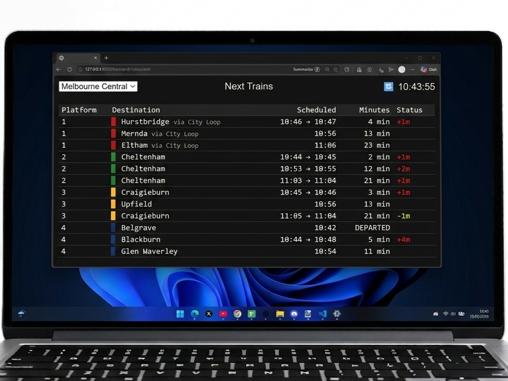

← backshinobu_works/projects/next_train
Next Train
Dashboard that displays real-time info for trains with GTFS.
Feb 2026 · 2 weeks
Personal Project
Full-Stack Web Application

▸OVERVIEW
▸FEATURES
▸KEY TAKEAWAYS
▸STACK & TOOLS